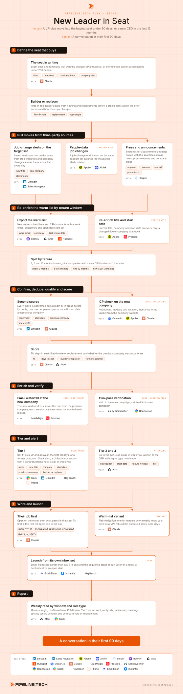

Play 16 · Third-party signals
New Leader in Seat
Give this to your agent
Install the Pipeline.tech "New Leader in Seat" outbound play. Fetch https://raw.githubusercontent.com/pipeline-tech/plays/main/core/SKILL.md and https://raw.githubusercontent.com/pipeline-tech/plays/main/plays/new-leader-in-seat/SKILL.md, save them as ~/.claude/skills/pipeline-outbound-core/SKILL.md and ~/.claude/skills/pipeline-new-leader-in-seat/SKILL.md, then run /pipeline-new-leader-in-seat.
Paste into Claude Code. It installs the shared core rules plus this play, then runs it as /pipeline-new-leader-in-seat.

Workflow, generated from the skillOpen full size
A new leader arrives with budget, a mandate and no loyalty to whoever the last person bought from. For roughly 90 days they are expected to change things, and the stack they inherited is the first item on the table. Reach them in that window with what peers in the same seat fix first, and the conversation is about their new job rather than your product.
Load pipeline-outbound-core first. Where a step says "apply core", follow that section of the core skill.
Inputs
Ask for these before step 1, and save them to ./pipeline-plays.config.json:
- The ICP in one paragraph: industries, headcount band, geography, the problem you solve, who owns it.
- The seat that buys: exact titles and functions, with the seniority floor.
- Stack answers from core section 1, plus where the first-party list lives (newsletter, CRM).
- The offer in one sentence, one proof point, and which customers may be named in writing.
Steps
1Define the seat that buys
ToolsClaude
- With the user, write the titles and functions whose arrival means budget moves: VP Sales, CRO, VP Marketing, Head of RevOps, or whichever seat buys what you sell. The floor is VP and above; under 200 people the owner of the function counts whatever the title says.
- Note first-in-role versus replacement. A builder wants a working system fast; a replacement inherited a stack and wants to know what to keep and what the last person got wrong.
- Add the CEO as its own seat. A new CEO in the last 12 months reopens every budget below them.
2Pull moves from third-party sources
ToolsLinkedInSales NavigatorApolloAI Ark (option)Serper
- Load the target accounts into Sales Navigator and save the seats as lead searches so job-change alerts arrive daily.
- Run a job-change enrichment on the same accounts with Apollo, or AI Ark when the list is large.
- Run Serper searches weekly for appointment phrases ("appoints", "joins as", "named") paired with the seat titles. Press catches CEO moves weeks before the LinkedIn profile updates.
3Re-enrich the warm list by tenure window
ToolsBeehiivAttioHubSpot (option)ApolloProspeo
- Export every subscriber and CRM contact with a work email; personal addresses are matched to a company first or left out.
- Re-enrich current title, company and start date on every row. A changed title or company is a move.
- Split the moves into windows: under 3 months, 3 to 6, 6 to 12, plus a group whose company has a new CEO in the last 12 months. Rows past 12 months stay in the normal nurture.
4Confirm, dedupe, qualify and score
ToolsLinkedInOcean.ioApolloClaudeAttio
- Confirm each move with a second source: LinkedIn for a press hit, press or the team page for a LinkedIn hit. Dedupe by person. Record the start date and previous company.
- The person qualifies first, then the company: headcount, industry, location, and a yes or no ICP verdict from the website with one reason. Apply core: exclusions, and check the previous company against the customer list too.
- Score on four fields: ICP fit, days in seat, first-in-role or replacement, and whether the previous company was a customer. Store all four on the CRM record with the start date and source URL.
5Enrich and verify
ToolsLeadMagicProspeoMillionVerifierBounceBan
- Find the address at the new company, not the old one. New addresses reach data vendors two to four weeks after the start date, so re-run the waterfall weekly on anything empty.
- Apply core: enrichment.
- Apply core: verification.
6Tier and alert
ToolsSlackLinkedInHeyReachPhoneAttio
- Tier 1: ICP fit plus VP and above in the first 30 days, or anyone whose previous company was a customer. Post a Slack alert with a one-line opener. The owner sends a LinkedIn connection with a short congratulations note, then calls in week two.
- Tier 2: ICP fit and VP and above between day 30 and 90, or a function owner under 200 people in the first 30 days. Two-step email in week two plus a LinkedIn connection.
- Tier 3: acceptable fit inside 90 days, plus the warm-list 6 to 12 month window. Email only.
- Nothing goes out in week one. Write every person to the CRM with play name, tier, tenure window, start date and source URL.
7Write and launch
ToolsClaudeEmailBisonInstantly (option)HeyReach
- Apply core: copy and send rules.
- Angle: their new job first, your product second. Name the move in the first sentence, say what peers in that seat fix first in their 90 days, then make one direct ask. Builders hear what a first stack looks like done right; replacers hear what to audit before deciding what to keep.
- Warm-list variant: these people already know you, so the tone is risk mitigation. "Most new VPs rebuild the outbound stack in 60 days" is the frame, followed by what the ones who get it right do differently.
- Name customers only with written permission; otherwise "a Series B team in the same space".
- Draft three variants for email 1 (builder, replacer, warm list) plus one threaded nudge for email 2. Show them to the user before upload.
- Upload leads with
{NEW_TITLE},{COMPANY},{PREVIOUS_COMPANY},{DAYS_IN_SEAT}; create the campaign from its own inbox set; email 1 lands no earlier than day 8 in seat, Tier 2 LinkedIn connection the same day. - Stop on a reply, a booking, an open deal or day 90.
8Report
ToolsAttioSlack
- Weekly: moves caught, confirmed rate, ICP-fit rate, Tier 1 count, sent, reply rate, interested, meetings, split by tenure window and by first-in-role versus replacement, against the cold baseline.
- Apply core: credits and handoff.
Guardrails
- Nothing in week one, ever. The sequence runs from day 8 to day 90; a move older than 90 days never appears in copy, with a new CEO the one exception at 12 months.
- Never say you were watching them. Name the move the way a peer would.
- A single feed gets start dates wrong by months and reads promotions as moves; every move needs a second source.
- One person, one sequence. A move from three feeds is one signal, not three emails. The warm list stays subscribed. Never run this and a cold play on the same domain in the same month.
Example run
User: "/pipeline-new-leader-in-seat for our outbound agency, B2B SaaS 50 to 500 people in the US, seats VP Sales, CRO, VP Marketing and Head of RevOps, plus a 4,200-subscriber newsletter"
- Asked for the offer line, proof and nameable customers; confirmed Sales Navigator, Apollo, Beehiiv, Attio, EmailBison, HeyReach and Slack.
- 2,300 target accounts in Sales Navigator; 212 job-change alerts in month one, Apollo added 148, Serper found 31 announcements.
- Warm list: 2,960 of 4,200 subscribers with a work email, 184 moves: 38 under 3 months, 61 at 3 to 6, 85 at 6 to 12; 47 companies with a new CEO in 12 months.
- 391 third-party moves deduped to 274, 231 confirmed, 142 at ICP-fit companies, 11 removed as customers or in sequence. 29 first-in-role, 102 replacements, 6 former customers.
- 131 addresses found at the new company, 19 waiting for next week's re-run; 118 verified valid, 7 catch-all in a separate campaign.
- 23 Tier 1 Slack alerts and connection notes, 9 calls booked for week two. 95 Tier 2 and 3 plus 99 warm-list rows loaded into "New Leader, November", copy approved, each row scheduled from day 8.
Run this play with usPipeline.tech runs New Leader in Seat end to end for clients: infrastructure, lists, copy, sends and replies.
Book a callView on GitHub